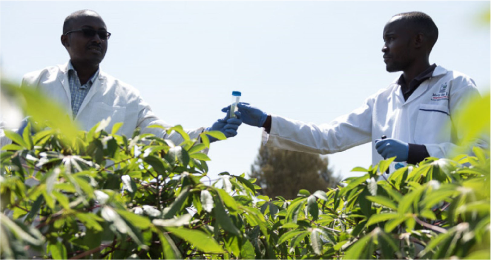
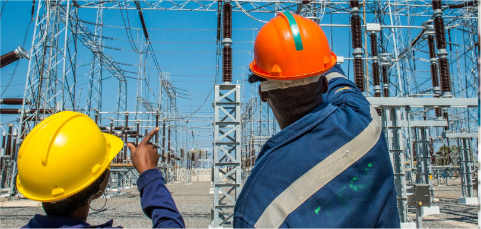

1. Increase trade and reduce transport costs along key HoA
corridors ($450 Million):

-
Technical assistance for policy reforms related to trade,
customs and transport in support of intra-Horn of Africa trade.
-
Policy actions in support of harmonization of standards and
procedures and reducing non-physical barriers to trade.
-
Complementary disease and pandemic control measures, including
information sharing.
-
Up-to 13 One-Stop Border Posts along four priority corridors:
Kismayo-Lamu-Mogadishu / Assab-Djibouti / Berbera-Djibouti /
Mogadishu-Berbera-Bossasso.
-
Development of dry ports along the four established corridors.
2. Increase investments and improve institutional climate for
regional value chains including livestock and agribusiness ($50
Million):

-
Develop regional value chains: promote intrasectoral dialogue;
address existing market failures; harmonise regulations and
reduce/eliminate tariffs, facilitate cross-border collaboration
(legal instruments); institutional support and capacity
building; access to inputs and compliance with norms and
standards.
-
Increase investments for value chains: small infrastructure to
link producers to markets; private investments into the
livestock and agri-business value chains; small grants to
upgrade means of production, and build capacity of operators
throughout the chain.